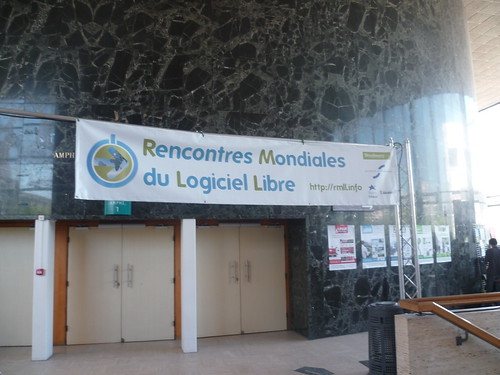

25 juillet 2011
Bilan des RMLL et after
De retour des RMLL à Strasbourg, bilan de la semaine.
Tout d'abord, il y a eu un soucis de communication quand aux journées grand public. Elles devaient être orientées arts numériques, cependant des stands comme OpenSuse, FSF et Framasoft étaient sur place. Mozilla aurais aussi aimé être présent.
Concernant la semaine : il y a eu beaucoup moins de personnes passées au stand que l'année dernière, c'est une grosse déception... en plus le stand n'était pas vraiment bien positionné dans la salle du Patio. Les préoccupations des visiteurs se tournaient aussi sur un même point :
le processus de sorties rapide de Firefox. D'une part les entreprises désirent une version LTS (long term support - Support à long terme), d'une autre les utilisateurs sont déstabilisés par les extensions qui ne sont pas mises à jour. Du côté de Mozilla il n'y a toujours pas de réponse claire quand au développement d'une telle version cependant des efforts ont été fait dernièrement pour aider les entreprises.
Mis à part le stand Mozilla, j'ai assisté à plusieurs conférences dont :
- Internet et Partage (Jérémie Zimmerman)
- Women & Mozilla
- Le projet AppStream
- Quoi de neuf dans Haiku ?

L'intégralité des photos est disponible sur mon Flickr et aussi sur le groupe RMLL 2011
Peu après la fin des RMLL, nous avons aussi Sonny et moi commencé à produire les sous-titres du documentaire Code Rush. Le travail va être long car les seules sources de transcript sont disponibles dans un fichier pdf mais organisées avec tous les "rushs", il faut alors piocher le bon contenu, mais aussi vérifier les problèmes de mots dû à l'OCR. La soirée du jeudi 14 nous avons été voir Harry Potter et les reliques de la mort - deuxième partie en VO à Strasbourg, puis allé voir le feu d'artifice. Après un retour et quelques heures de sommeil en plus, j'ai enchaîné mon weekend en faisant du char à voile pour la première fois :) C'était une super expérience, je m'attendais à une pratique assez technique, mais finalement on apprend très vite et on s'amuse bien. Dernier point, j'ai commencé le skin de Nightingale !
Commentaires 0
Aucun commentaire.